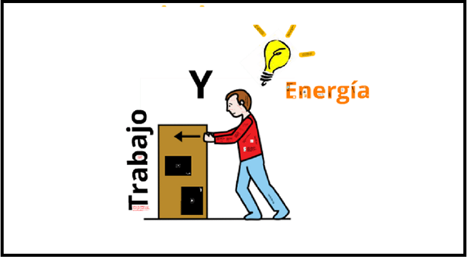
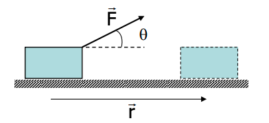
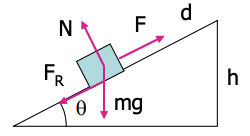
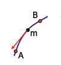
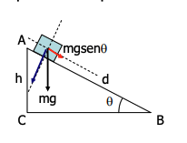
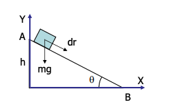
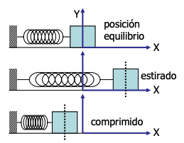
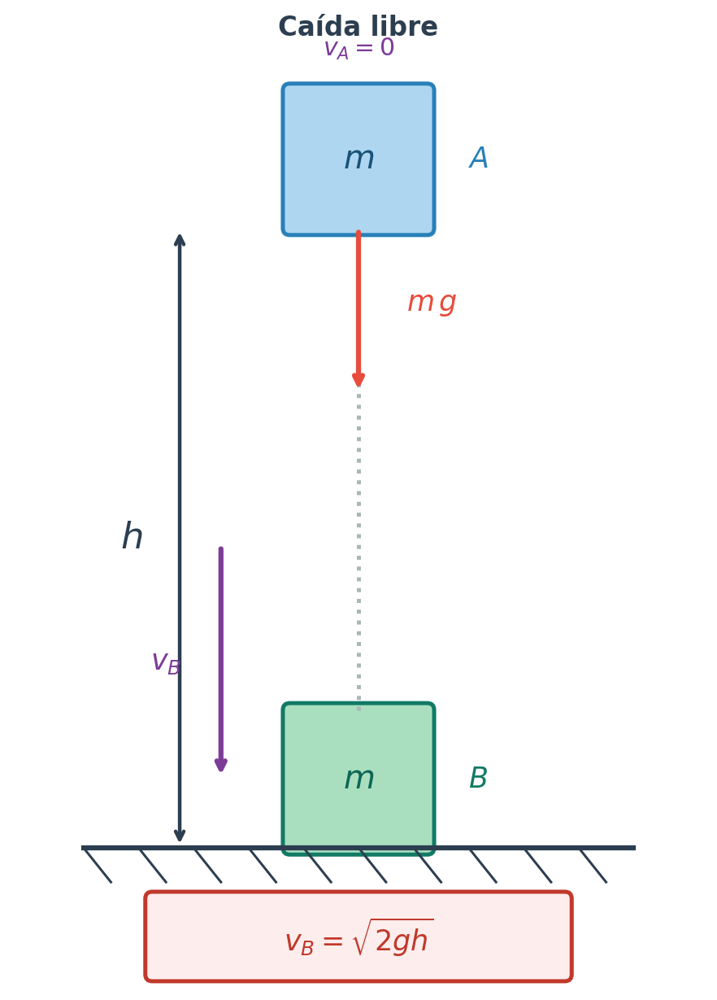
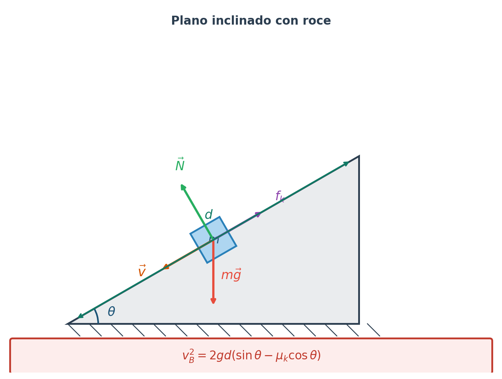

Unidad 5: Trabajo y energía mecánica#
Descripción general#
En esta unidad se estudia el movimiento desde un punto de vista energético. A diferencia del enfoque dinámico basado en fuerzas y aceleraciones, el enfoque energético permite analizar muchos problemas mediante magnitudes escalares, lo que simplifica notablemente su resolución.
Se introducirán los conceptos de trabajo mecánico, energía cinética, energía potencial, potencia y conservación de la energía mecánica.
{kind=link}

Objetivo de aprendizaje#
Al finalizar esta unidad, el estudiante será capaz de:
interpretar el trabajo como un mecanismo de transferencia de energía.
calcular el trabajo realizado por fuerzas constantes y por la fuerza neta.
relacionar el trabajo neto con el cambio de energía cinética.
comprender el significado físico de la energía potencial.
aplicar el principio de conservación de la energía mecánica.
resolver problemas de movimiento usando métodos energéticos.
1. Introducción al enfoque energético#
El estudio de la física desde el punto de vista energético tiene una gran ventaja: muchas de las magnitudes involucradas son escalares.
Esto permite analizar el movimiento sin tener que trabajar siempre con ecuaciones vectoriales completas.
En mecánica clásica, dos formas fundamentales de energía son:
La energía cinética.
La energía potencial.
Ambas se relacionan mediante el trabajo mecánico.
2. Trabajo mecánico#
El trabajo mecánico es una forma de transferir energía a un cuerpo mediante la acción de una fuerza durante un desplazamiento.
{kind=link}

Si una fuerza constante \(\vec{F}\) actúa sobre un cuerpo que se desplaza una cantidad \(\Delta \vec{r}\), el trabajo realizado es:
donde:
\(F\) es la magnitud de la fuerza;
\(\Delta r\) es la magnitud del desplazamiento;
\(\theta\) es el ángulo entre la fuerza y el desplazamiento.
Nota
El trabajo es nulo si \(r=0\) y/o la fuerza es perpendicular al desplazamiento. ej: el realizado por el peso sobre un cuerpo en una superficie horizontal
El trabajo el positivo si la fuerza es favorable al movimiento (\(cos \theta > 0\)).
El trabajo es negativo si la fuerza se opone al movimiento (\(cos \theta < 0\)). ej: el realizado por la fuerza de roce
Unidad de medida#
La unidad del trabajo en el Sistema Internacional es el joule:
3. Signo del trabajo#
El signo del trabajo depende del ángulo entre la fuerza y el desplazamiento.
Trabajo positivo#
Si la fuerza tiene una componente en la misma dirección del desplazamiento:
entonces el trabajo es positivo.
Esto significa que la energía se transfiere desde el entorno hacia el cuerpo.
Trabajo negativo#
Si la fuerza se opone al desplazamiento:
entonces el trabajo es negativo.
Esto significa que la energía se transfiere desde el cuerpo hacia el entorno.
Trabajo nulo#
Si la fuerza es perpendicular al desplazamiento:
entonces:
En este caso, la fuerza no transfiere energía al cuerpo.
Relación entre trabajo y producto escalar#
El trabajo puede interpretarse como un producto escalar entre fuerza y desplazamiento:
Esto explica por qué el trabajo depende de:
la magnitud de la fuerza;
la magnitud del desplazamiento;
el ángulo entre ambas.
4. Trabajo de fuerzas frecuentes#
Trabajo del peso#
Si el desplazamiento es horizontal y el peso es vertical, el trabajo del peso es cero porque ambas direcciones son perpendiculares.
Trabajo de la fuerza normal#
La fuerza normal también suele ser perpendicular al desplazamiento, por lo que normalmente no realiza trabajo.
Trabajo de una tensión#
Si la tensión forma un ángulo con el desplazamiento, se aplica directamente la fórmula general del trabajo.
Trabajo del roce#
La fuerza de roce generalmente se opone al movimiento, por lo que su trabajo suele ser negativo.
5. Trabajo neto#
El trabajo neto es la suma de todos los trabajos realizados por las fuerzas que actúan sobre un cuerpo entre dos instantes:
Representa la transferencia neta de energía hacia o desde el cuerpo.
Ejemplo: Subir un bloque por un plano inclinado rugoso (con rozamiento).#
{kind=link}

Figura 40 DCL de bloque que sube por un plano inclinado#
6. Energía cinética#
La energía cinética es la energía asociada al movimiento de un cuerpo. Siendo este un escalar con las mismas unidades que el trabajo.
Se define como:
donde:
\(m\) es la masa del cuerpo;
\(v\) es la rapidez del cuerpo.
Propiedades#
es una magnitud escalar.
siempre es positiva o nula.
depende del cuadrado de la rapidez.
Unidad de medida#
Su unidad en el Sistema Internacional es el joule.
Ejemplo: Energía Cinética (K)#
Supongamos una partícula de masa m bajo la acción de una fuerza resultante F que la desplaza a lo largo de una trayectoria:

7. Teorema trabajo–energía cinética#
Uno de los resultados más importantes de esta unidad es el teorema trabajo–energía cinética:
donde:
Esto significa que el trabajo neto realizado sobre un cuerpo es igual al cambio de su energía cinética.
Interpretación física#
si el trabajo neto es positivo, la energía cinética aumenta.
si el trabajo neto es negativo, la energía cinética disminuye.
si el trabajo neto es cero, la energía cinética permanece constante.
8. Potencia#
La potencia mide la rapidez con la que se transfiere energía o se realiza trabajo.
Potencia promedio#
Se define como:
donde:
\(\Delta W\) es el trabajo realizado;
\(\Delta t\) es el intervalo de tiempo.
Unidad de medida#
La unidad de potencia en el Sistema Internacional es el watt:
Interpretación#
Una potencia alta significa que la transferencia de energía ocurre más rápidamente.
9. Energía potencial#
La energía potencial es la energía asociada a la posición o configuración de un sistema.
En esta unidad se estudiarán principalmente dos formas:
energía potencial gravitatoria.
energía potencial elástica.
Ejemplo:#
Supongamos la fuerza de la gravedad y calculemos el \(W\) realizado sólo por esta fuerza (\(mg\)) al mover un objeto a lo largo de dos caminos diferentes que unan el punto inicial \(A\) y el final \(B\):

Camino 1: De \(A\) hasta \(B\) por el plano inclinado,
Camino 2: De \(A\) hasta \(B\) pasando por \(C\),
Vemos que el trabajo es el mismo. Se puede probar que, aunque elijamos otro camino, \(W\) sólo depende de la diferencia de altura \(h\) entre \(A\) y \(B\).
10. Energía potencial gravitatoria#
Cerca de la superficie terrestre, la energía potencial gravitatoria de un cuerpo se expresa como:

donde:
\(m\) es la masa;
\(g\) es la aceleración de gravedad;
\(y\) es la altura respecto de un nivel de referencia.
Cambio en la energía potencial gravitatoria#
Lo relevante físicamente es el cambio de energía potencial:
Interpretación#
si el cuerpo sube, su energía potencial gravitatoria aumenta;
si baja, disminuye.
11. Energía potencial elástica#
Cuando un resorte ideal se deforma, almacena energía potencial elástica.

Se define como:
donde:
\(k\) es la constante elástica del resorte;
\(x\) es la deformación respecto a la posición de equilibrio.
Interpretación#
Tanto si el resorte se estira como si se comprime, la energía potencial elástica aumenta, porque depende de \(x^2\).
12. Fuerzas conservativas y no conservativas#
Fuerzas conservativas#
Son aquellas para las cuales el trabajo entre dos puntos no depende de la trayectoria seguida, sino solo de la posición inicial y final.
Ejemplos:
fuerza gravitatoria.
fuerza elástica del resorte.
Estas fuerzas permiten definir una energía potencial asociada.
Fuerzas no conservativas#
Son aquellas para las cuales el trabajo sí depende de la trayectoria.
Ejemplo típico:
fuerza de roce.
Estas fuerzas suelen disipar energía mecánica en otras formas, como calor.
13. Energía mecánica#
La energía mecánica de un sistema es la suma de su energía cinética y su energía potencial:
Dependiendo del problema, \(U\) puede incluir:
energía potencial gravitatoria
energía potencial elástica
o ambas.
14. Conservación de la energía mecánica#
Si en un sistema solo actúan fuerzas conservativas, entonces la energía mecánica permanece constante:
o equivalentemente:
Interpretación#
La energía puede transformarse de una forma a otra:
de potencial a cinética;
de cinética a potencial;
pero la suma total permanece constante.
15. Cambio de energía mecánica con roce#
Si actúan fuerzas no conservativas, como el roce, la energía mecánica ya no se conserva.
En ese caso:
donde \(W_{\text{nc}}\) es el trabajo realizado por fuerzas no conservativas.
Interpretación#
Cuando hay roce:
parte de la energía mecánica se transforma en energía térmica;
la energía mecánica final es menor que la inicial.
16. Aplicaciones típicas del método energético#
El enfoque energético permite resolver con facilidad problemas como:
caída libre
lanzamiento vertical
bloques sobre superficies con o sin roce
resortes comprimidos o estirados
planos inclinados
sistemas con variación de altura
En muchos casos, usar energía resulta más directo que aplicar Newton en cada etapa del movimiento.
Aplicación: ritmo cardíaco y leyes de escala#
A partir del concepto de tasa metabólica y utilizando las leyes de escala se puede calcular cómo varía el ritmo cardíaco con el tamaño de los individuos.
Como la energía consumida acaba disipándose en forma de calor que escapa a través de la piel, se encuentra que \(P_{\text{met}}\) (potencia metabólica) es proporcional al área del cuerpo de un animal.
Establecemos una hipótesis biológica considerando que el \(\text{O}_2\) necesario para el metabolismo es proporcionado por la sangre y ésta es bombeada por el corazón.
Una \(P_{\text{met}}\) elevada se producirá cuanto más grande sea el corazón y más rápido pueda bombear. Por tanto, podemos suponer que la \(P_{\text{met}}\) es proporcional al volumen del corazón \(V\) por la frecuencia de bombeo \(f\) (pulsaciones por segundo),
Sea \(k\) el factor de escala entre dos animales semejantes, según el modelo de semejanza geométrica (\(k = L'/L\);\ \(k^2 = A'/A\);\ \(k^3 = V'/V\)):
Así que el corazón de un animal mayor late más lentamente que el de uno pequeño.
Puede comprobarse cómo el ritmo cardíaco en bebés es superior. En ratones también se aprecia claramente. El mamífero con mayor ritmo cardíaco que existe es la musaraña.
Por ejemplo, si comparamos a seres humanos (adultos) con el mono (rhesus) con un factor de escala entre ambos de \(2.5\):
17. Ejercicios de ejemplo#
Ejemplo 1 — Simple: Caída libre desde altura \(h\)#
{kind=link}

Situación: Una masa \(m\) se suelta desde el reposo a una altura \(h\) sobre el suelo. No hay rozamiento.
Estado inicial \(A\) (en la cima):
Estado final \(B\) (en el suelo):
Aplicando conservación de energía mecánica:
Ejemplo 2: Plano inclinado con rozamiento y potencia#
{kind=link}

Situación: Una masa \(m\) parte del reposo y desliza una distancia \(d\) sobre un plano inclinado un ángulo \(\theta\), con coeficiente de rozamiento cinético \(\mu_k\).
Paso 1 — Trabajo de cada fuerza#
Paso 2 — Teorema trabajo-energía cinética#
Paso 3 — Balance energético con fuerzas disipativas#
Paso 4 — Potencia instantánea al llegar a \(B\)#
18. Interpretación física global#
La energía ofrece una forma poderosa de entender los fenómenos mecánicos.
Permite describir:
cómo cambia el movimiento de un cuerpo;
cómo se almacena energía;
cómo se transfiere entre cuerpos o sistemas;
cómo parte de la energía puede disiparse.
Así, el análisis energético complementa y en muchos casos simplifica el análisis dinámico.
19. Síntesis de la unidad#
En esta unidad se estudió el trabajo mecánico como mecanismo de transferencia de energía y se introdujeron las principales formas de energía mecánica.
Se analizaron:
el trabajo realizado por fuerzas
el trabajo neto
la energía cinética
el teorema trabajo–energía
la potencia
la energía potencial gravitatoria
la energía potencial elástica
la conservación de la energía mecánica.
Estos conceptos constituyen una herramienta central para resolver problemas de mecánica de manera más eficiente y conceptual.
Conceptos clave#
trabajo mecánico
trabajo neto
energía cinética
teorema trabajo–energía
potencia
energía potencial
energía potencial gravitatoria
energía potencial elástica
energía mecánica
fuerzas conservativas
fuerzas no conservativas
conservación de la energía mecánica
Fórmulas clave#
Guía asociada#
Guía 5: Trabajo y energía mecánica